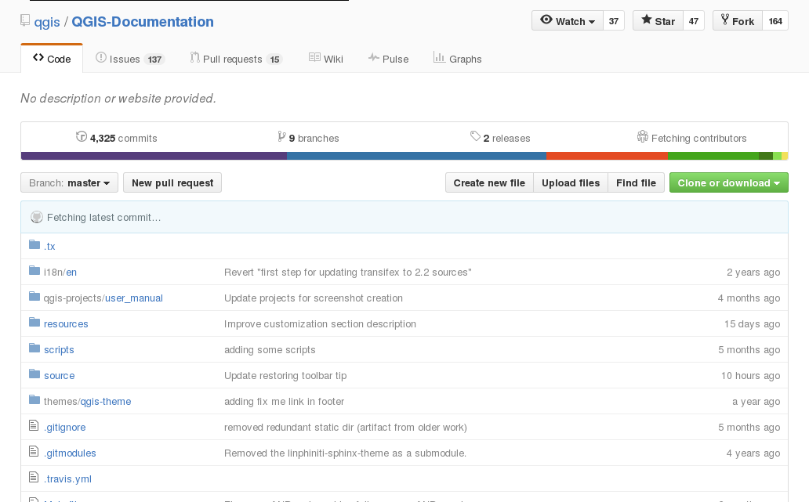
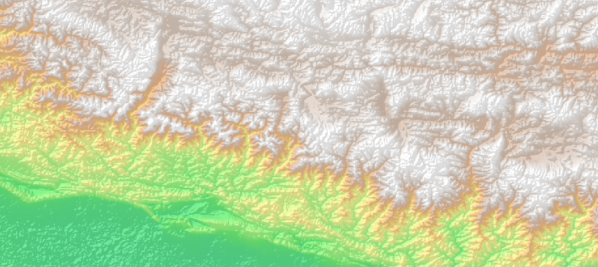

QGIS 3.4 - Utilisateur¶
Paul Blottiere
2019
Plan de la formation¶
- Jour 1
Présentation
Installation Windows
Les couches vecteur
Style et étiquettes
Requêtes attributaires et spatiales
- Jour 2
Les couches raster
Les flux WMS
Mise en page cartographique et atlas
Présentation (1)¶
Développement débuté en 2002
Logiciel SIG libre multiplate-forme
Quantum GIS -> version 1.9
Présentation (2)¶
De nombreux formats supportés
Raster (GeoTIFF, JPG, PNG, …)
Vecteur ( Shapefile, GRASS GIS, Mapinfo, … )
Base de données spatiale ( Postgis, SpatiaLite, … )

Présentation (3)¶
Dernière version
3.4 / Madeira
Sortie en 26/10/2018
Bientôt la 3.6!
Road Map: https://www.qgis.org/fr/site/getinvolved/development/roadmap.html

Installation Windows (1)¶
https://www.qgis.org/fr/site/forusers/download.html
- Deux moyens d’installer QGIS:
Installateur indépendant
Installateur réseau OsGeo4W

Installation Windows (3)¶
Installateur réseau : OsGeo4W
Pour les utilisateurs “experts”
Permet d’installer QGIS ainsi que de nombreux logiciels annexes
Permet d’installer plusieurs versions de QGIS en parallèle

Installation Windows (5)¶

1 - Installer Windows avec l’installateur indépendant
2 - Lancer QGIS pour vérifier le fonctionnement
Information (1)¶
De nombreuses sources d’information :

Documentation : http://www.qgis.org/fr/docs/
Tutoriaux : http://www.qgistutorials.com/fr/, http://www.ades.cnrs.fr/tutoqgis/
Contribuer : https://github.com/qgis/QGIS-Documentation
Information (2)¶
Remontée de bug : https://www.qgis.org/fr/site/getinvolved/development/bugreporting.html
Mailing lists : https://www.qgis.org/fr/site/getinvolved/mailinglists.html#qgis-mailinglists


Les couches vecteur (1)¶
Les bases
Définies par des coordonnées
3 types de géométrie : point, ligne et polygone
1 seul type de géométrie par layer
Données attributaires : données associées à la composante spatiale
69 formats gérés (lib OGR) : format standard QGIS est le shapefile ESRI
Les couches vecteur (2)¶
Charger un shapefile

NOTE: l’outil Refactor fields permet de changer le type des attributs, les réordonner, …
Les couches vecteur (4)¶
SCR
- Les coordonnées d’un point peuvent être exprimées :
en degrés dans un système géodésique de référence
en mètres suite à une projection (coordonnes 3D -> surface plane)
Système de Coordonnées de Référence : système de coordonnées + projection

Les couches vecteur (5)¶
Symbologie
Apparence visuelle sur la carte
Couleur, visibilité dépendante de l’échelle, positionnement, …
Analyse thématique ( illustration de carte )

Les couches vecteur (6)¶
Expressions
- Analyse syntaxique d’expression :
évaluation en prédicats booléens ou comme des fonctions
nombre, texte, référence de colonnes
fonctions mathématiques, couleur, date/heure, …

Les couches vecteur (7)¶
Expressions - example
case
when CODE_DEPT = 29 or CODE_DEPT = 53
then
POPULATION
else
0
end
Les couches vecteur (8)¶
1 - Télécharger les données SHP https://www.data.gouv.fr/fr/datasets/geofla-communes/
2 - Ouvrir QGIS, charger COMMUNE.shp et déterminer le SCR
3 - Ouvrir la table d’attributs pour visualiser les informations disponibles
- 3 - Changer les paramètres du style “Symbole Unique” :
mode de remplissage “simple”
changer la couleur de remplissage et de la bordure
changer le style de remplissage
changer le style de bordure
Les couches vecteur (9)¶
- 4 - Changer le style en “Catégorisé” et :
créer une catégorie selon le code de département
changer la palette de couleur
classer et visualiser
visualiser l’échelle dans l’arbre des couches
sauvegarder/recharger le style de l’analyse thématique
5 - Catégoriser selon la densité de population
6 - Sauvegarder le projet
Les couches vecteur (10)¶
Labels / Diagrammes
- Ajout d’étiquettes configurables en fonction de la géométrie :
texte
placement
affichage
couleur / ombre
…

Les couches vecteur (11)¶
1 - Ouvrir le projet QGIS précédent
- 2 - Labeliser la couche COMMUNE en mode “Montrer les étiquettes pour cette couche”:
avec le code de département
changer la police
ajouter un cercle de couleur en fond des labels
ajouter une ombre au label
ajouter une règle pour ne visualiser les labels qu’à petites échelles
Les couches vecteur (12)¶
- 3 - Passer en mode “Etiquettes basées sur des règles” :
la règle : afficher des labels seulement pour le département 29
les labels : multi-ligne indiquant le nom de la commune et la population
formatter les labels de telle sorte qu’on autorise un retour à la ligne sur le caractère “-” quand le nom de la commune excède un certain nombre de caractères
- 4 - Data-defined :
ajuster la position de certain label à la main
forcer la visibilité de certain label
Les couches vecteur (13)¶
Formulaire
permet d’éditer les attributs d’une entité
sélection automatique de l’entité sur la carte
outil “Identifier les entités”

Les couches vecteur (14)¶
Actions
Un utilisateur peut ajouter des actions personalisées sur une entité!

Les couches vecteur (15)¶
1 - Ajouter un attribut “photo” à la couche COMMUNE
2 - Indiquer dans les propriétés du champs qu’on veut utiliser un outil d’édition “Photo”
3 - Utiliser l’outil “Identifier les entités” et attribuer des photos à quelques entités
4 - Ajouter une action permettant d’ouvrir la photo de l’entité grâce à la syntaxe [%”photo”%]
5 - Retourner sur la carte et visualiser les photos grâce à l’action définie
Les couches vecteur (16)¶
Opérations
intersection, différence, union, …
manipulation d’entité vectorielle “Barre d’outils de la numérisation avancée” ( entités vs parties, fusion, … )
de très nombreux algorithmes sont disponibles dans “La boite à outils de traitements”


Les couches vecteur (20)¶
Couche virtuelle
résultat d’une requête mélangeant SQL et Expression
peut utiliser plusieurs couches vecteur
les couches filles peuvent être embarquées dans la couche virtuelle


Les couches vecteur (22)¶
- 1 - Utiliser les outils suivant pour créer une couche vectorielle contenant seulement les communes frontalières entre le Finistère et le reste de la France
couche virtuelle
géotraitement “Différence””
géotraitement “Tampon”
requête spatiale
WMS / WFS (1)¶
- Flux :
données géoréférencées à partir de serveur de données
données déjà stylisées
authentification possible
WMS ( Web Map Service ) : raster
WFS ( Web Feature Service ) : vecteur
Plugin : Quick Map Services

WMS / WFS (3)¶
1 - Ajouter un flux WMS http://services.sandre.eaufrance.fr/geo/zonage
2 - Utiliser le plugin Quick Map Services pour ajouter un fond de carte
Les couches raster (1)¶
Les bases
Matrice de cellules
Photographies aériennes, images satellites, …
Géoréférencées grâce à la position des pixels

Les couches raster (3)¶
- De nombreux algorithmes de traitement disponibles dans QGIS et via Processing :
extraction, contour, analyse, …
GRASS GIS 7 ( r.to.vect, r.watershed, … )

Les couches raster (4)¶

Les couches raster (5)¶
1 - Récupérer les données ici : https://github.com/spatialthoughts/qgis-tutorials/blob/master/downloads/GMTED2010N10E060_300.zip
2 - Charger le fichier raster 10n060e_20101117_gmted_mea300.tif dans QGIS
3 - Extraire une partie du raster en faisant un drag de la bounding box dans le canvas
4 - Extraire les contours tous les 100 mètres avec un export de l’altitude dans le champs ELEV

Les couches raster (7)¶
5 - Ajouter un point dans une couche virtuelle à la position du mont Everest grâce à la commande suivante (x et y doivent être en degrés décimaux) :
SELECT 1 as id, MakePoint(x, y, 4326) as geom
6 - Labeliser la couche contour avec l’élévation et vérifier que le mont Everest se trouve bien à l’altitude maximale
Les couches raster (8)¶
7 - Installer et utiliser le plugin Terrain profile pour récupérer une courbe de profile au niveau du mont Everest
8 - Styliser le raster avec le type de rendu “Singleband pseudocolor” et utiliser les couleurs de la palette topographique sda

Les couches raster (10)¶
9 - Créer un hillshade à partir du raster : Raster -> Analyse -> DEM.
10 - Jouer avec les paramètres de rendu (transparence, luminosité, …) pour donner du relief au raster grâce au hillshade :
Composeur et atlas (1)¶
Composeur de carte
- Fournit des outils de mise en page et d’impression :
échelle, carte, légende, …
export (SVG, PDF, …)
Atlas
Création automatisée d’une carte pour chaque entité d’un couche virtuelle

{kind=link}
{kind=link}
{kind=link}
{kind=link}
{kind=link}
{kind=link}
{kind=link}
{kind=link}
Composeur et atlas (3)¶
1 - Avoir un shapefile des communes de Bretagne dans le canvas principal supperposé avec le même fond de carte raster que précédement.

Composeur et atlas (4)¶
2 - Aller dans le composeur de carte et rajouter la carte principale zoomant sur la Bretagne puis ajouter une seconde carte servant d’overview d’un point de vue national
3 - Rajouter des éléments à la carte : échelle, légende, forme, flèche, image, …
4 - Labeliser la couche vecteur
5 - Faire un export.
Composeur et atlas (5)¶
6 - Faire un atlas avec un polygone “COMMUNE” comme entité de référence.
7 - Rajouter un deuxième overview d’un point de vue départemental.
8 - Rajouter un champs texte utilisant une expression affichant la densité de population de l’entité courante à partir de la superficie calculée par QGIS
9 - Imprimer l’atlas dans un PDF